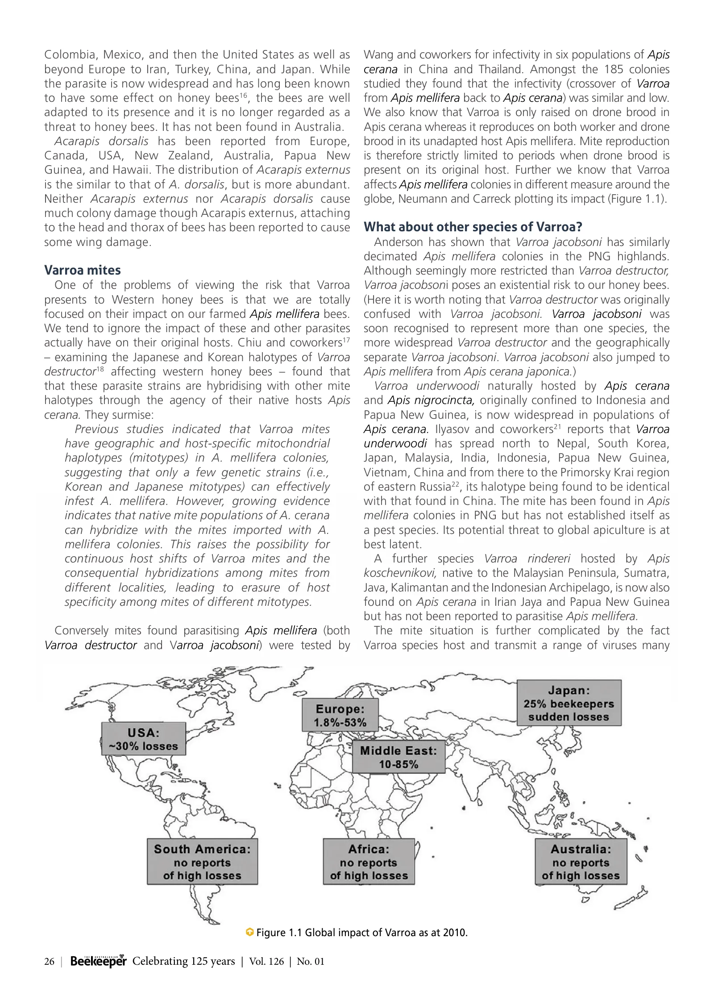

Colombia, Mexico, and then the United States as well as
beyond Europe to Iran, Turkey, China, and Japan. While
the parasite is now widespread and has long been known
to have some effect on honey bees16, the bees are well
adapted to its presence and it is no longer regarded as a
threat to honey bees. It has not been found in Australia.
Acarapis dorsalis has been reported from Europe,
Canada, USA, New Zealand, Australia, Papua New
Guinea, and Hawaii. The distribution of Acarapis externus
is the similar to that of A. dorsalis, but is more abundant.
Neither Acarapis externus nor Acarapis dorsalis cause
much colony damage though Acarapis externus, attaching
to the head and thorax of bees has been reported to cause
some wing damage.
Varroa mites
One of the problems of viewing the risk that Varroa
presents to Western honey bees is that we are totally
focused on their impact on our farmed Apis mellifera bees.
We tend to ignore the impact of these and other parasites
actually have on their original hosts. Chiu and coworkers17
– examining the Japanese and Korean halotypes of Varroa
destructor18 affecting western honey bees – found that
that these parasite strains are hybridising with other mite
halotypes through the agency of their native hosts Apis
cerana. They surmise:
Previous studies indicated that Varroa mites
have geographic and host-specific mitochondrial
haplotypes (mitotypes) in A. mellifera colonies,
suggesting that only a few genetic strains (i.e.,
Korean and Japanese mitotypes) can effectively
infest A. mellifera. However, growing evidence
indicates that native mite populations of A. cerana
can hybridize with the mites imported with A.
mellifera colonies. This raises the possibility for
continuous host shifts of Varroa mites and the
consequential hybridizations among mites from
different localities, leading to erasure of host
specificity among mites of different mitotypes.
Conversely mites found parasitising Apis mellifera (both
Varroa destructor and Varroa jacobsoni) were tested by
Wang and coworkers for infectivity in six populations of Apis
cerana in China and Thailand. Amongst the 185 colonies
studied they found that the infectivity (crossover of Varroa
from Apis mellifera back to Apis cerana) was similar and low.
We also know that Varroa is only raised on drone brood in
Apis cerana whereas it reproduces on both worker and drone
brood in its unadapted host Apis mellifera. Mite reproduction
is therefore strictly limited to periods when drone brood is
present on its original host. Further we know that Varroa
affects Apis mellifera colonies in different measure around the
globe, Neumann and Carreck plotting its impact (Figure 1.1).
What about other species of Varroa?
Anderson has shown that Varroa jacobsoni has similarly
decimated Apis mellifera colonies in the PNG highlands.
Although seemingly more restricted than Varroa destructor,
Varroa jacobsoni poses an existential risk to our honey bees.
(Here it is worth noting that Varroa destructor was originally
confused with Varroa jacobsoni. Varroa jacobsoni was
soon recognised to represent more than one species, the
more widespread Varroa destructor and the geographically
separate Varroa jacobsoni. Varroa jacobsoni also jumped to
Apis mellifera from Apis cerana japonica.)
Varroa underwoodi naturally hosted by Apis cerana
and Apis nigrocincta, originally confined to Indonesia and
Papua New Guinea, is now widespread in populations of
Apis cerana. Ilyasov and coworkers21 reports that Varroa
underwoodi has spread north to Nepal, South Korea,
Japan, Malaysia, India, Indonesia, Papua New Guinea,
Vietnam, China and from there to the Primorsky Krai region
of eastern Russia22, its halotype being found to be identical
with that found in China. The mite has been found in Apis
mellifera colonies in PNG but has not established itself as
a pest species. Its potential threat to global apiculture is at
best latent.
A further species Varroa rindereri hosted by Apis
koschevnikovi, native to the Malaysian Peninsula, Sumatra,
Java, Kalimantan and the Indonesian Archipelago, is now also
found on Apis cerana in Irian Jaya and Papua New Guinea
but has not been reported to parasitise Apis mellifera.
The mite situation is further complicated by the fact
Varroa species host and transmit a range of viruses many
Figure 1.1 Global impact of Varroa as at 2010.
26 |
Celebrating 125 years | Vol. 126 | No. 01